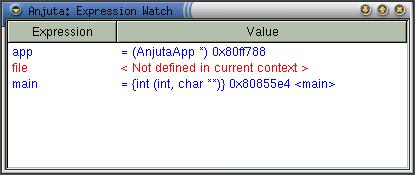
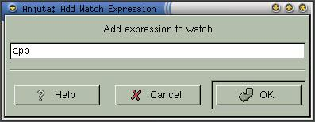

|
|
Anjuta Manual version 0.1Copyright (c) Kh. Naba Kumar Singh |
| Contents | Index | Shortcuts |
| PREV:Inspecting/Evaluating expressions | UP:Contents(Debugging) | NEXT:Stack Trace |
Inspecting or evaluating an expression provides you the result only once. If you want to continuously monitor some variables or expressions, you can use expression watch.
You add all the expressions and variables to monitor in the watch. There values will be automatically updated and shown in the expression watch window.

Adding an expression to watch:
Bring up the watch by activating View->Watch Window. Right click on this watch window to pop-up the operation menu. Activate the menu item Add. A dialog box prompting for the expression will appear. Enter the expression and click OK.

You can save yourself some typing, if you had selected the expression in the editor prior to the addition.
Removing an expression from watch:
Bring up the watch by activating View->Watch Window. Select the watch entry you want to remove. Right click on this watch window to pop-up the operation menu. Activate the menu item Remove. This will remove the watch entry.
Updating and clearing the watch:
Bring up the watch by activating View->Watch Window. Right click on this watch window to pop-up the operation menu. Activate the menu item Update or Clear to update or clear, respectively.